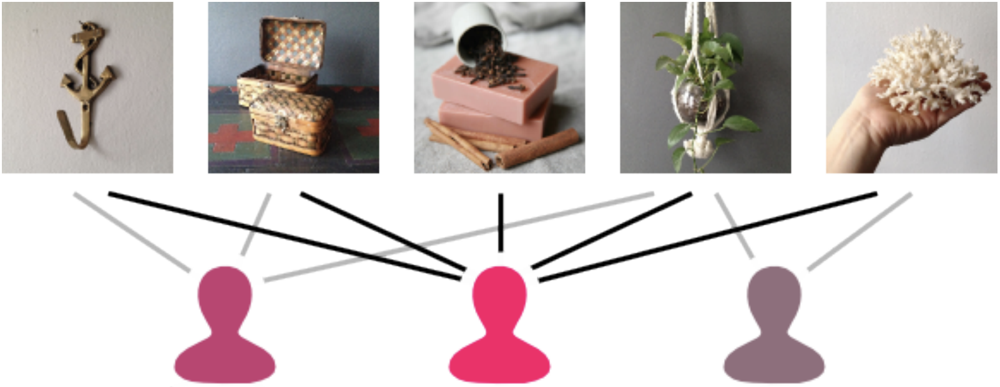

social poisson factorization
 Web users consume media; we choose which books to download, which news articles to read, and which movies to watch. In the past, we often found media by asking trusted friends for recommendations. In the modern web, however, we rely more on algorithmic preference-based recommendation models to find media we are likely to enjoy. Preference-based recommendation systems have transformed how we consume media; these methods uncover our latent preferences from usage data and form recommendations based on the behavior of others with similar tastes.
But preference-based recommendations focuses us and reinforces our preferences, losing the social aspect of consumption where a trusted friend might point us to an interesting item that does not match our typical preferences. In this work, we aim to bridge the gap between preference- and social-based recommendations. We exploit that our social structure—that is, the friends and colleagues from whom we might enjoy recommendations—is often encoded on the same platform as the one which we use to find media. This opens the door to using the preferences and histories of users we know to inform algorithmic recommendations.
Specifically, we have developed a probabilistic model that incorporates social network information into traditional recommendation models, reintroducing the social aspect to recommendation and improving recommendations.
citation
@inproceedings{Chaney2015,
author = {Chaney, Allison J.B. and Blei, David M. and Eliassi-Rad, Tina},
title = {A Probabilistic Model for Using Social Networks in Personalized Item Recommendation},
booktitle = {Proceedings of the 12th ACM Conference on Recommender Systems},
series = {RecSys '15},
year = {2015},
isbn = {978-1-4503-3692-5},
pages = {43--50},
doi = {10.1145/2792838.2800193}
}resources
- A Probabilistic Model for Using Social Networks in Personalized Item Recommendation [via ACM Digital Library] [PDF]
- RecSys '15 talk slides [PDF]
- Source code [via GitHub]
- Working paper at NIPS 2013 Workshop: What Difference Does Personalization Make? [PDF]